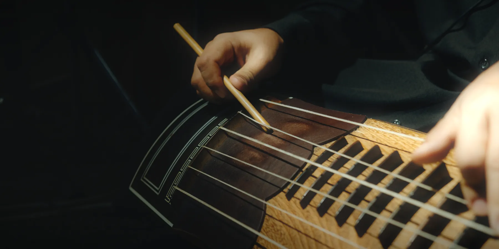
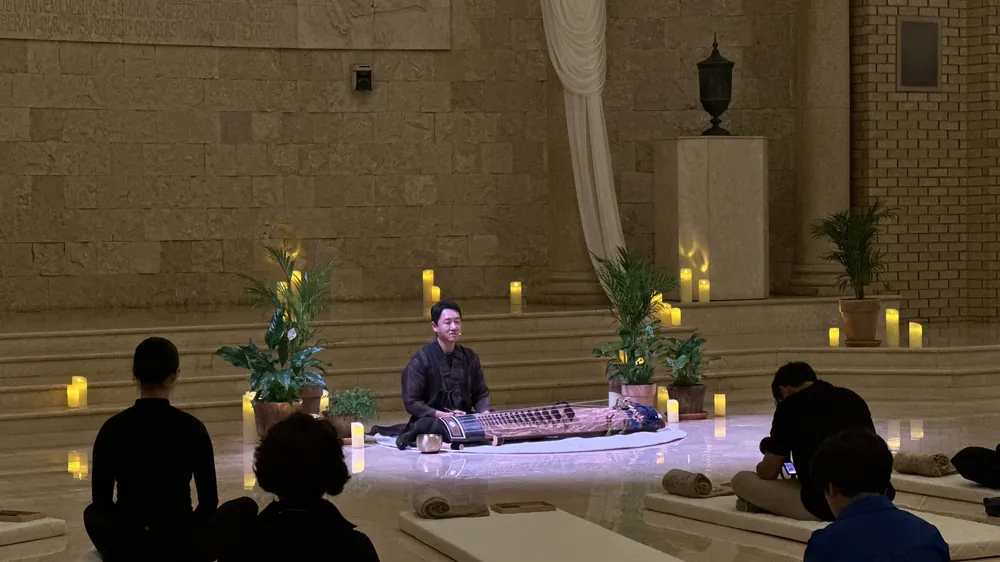
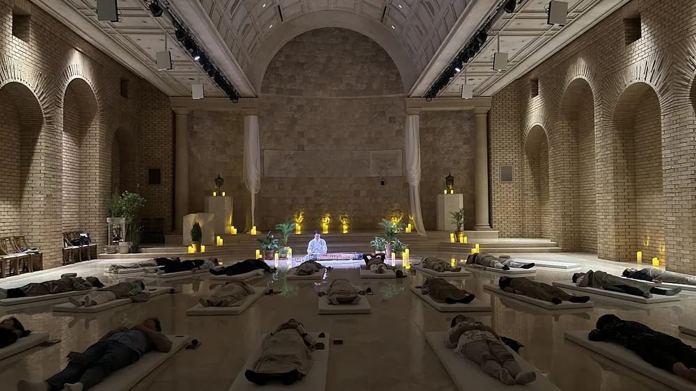
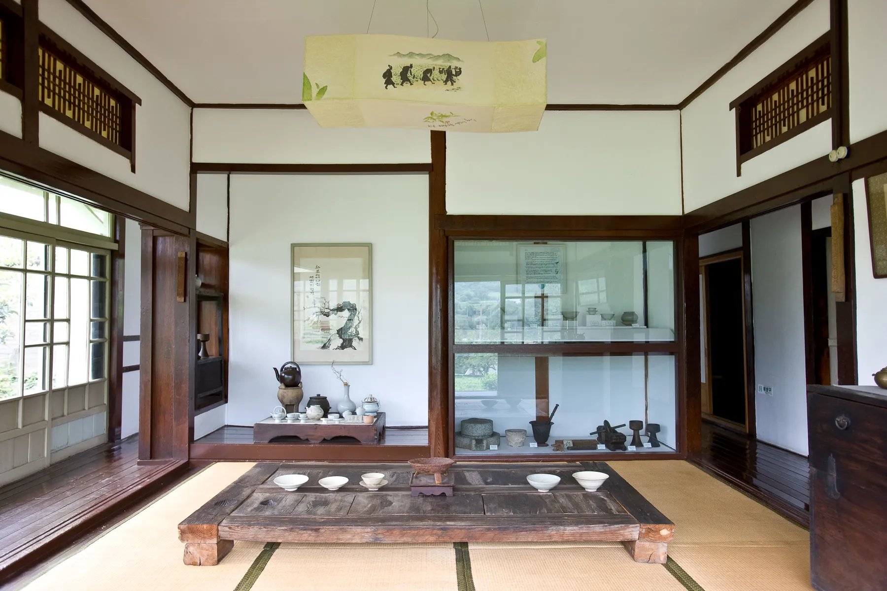
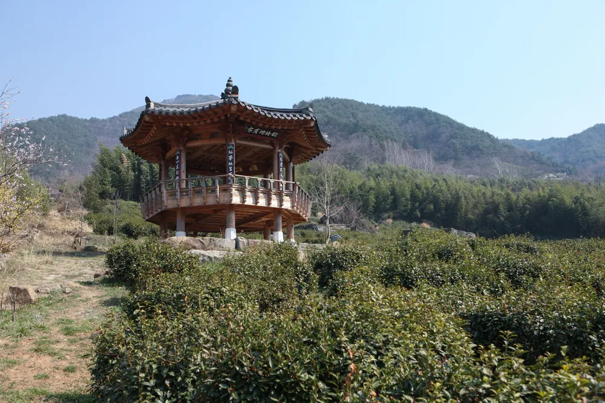
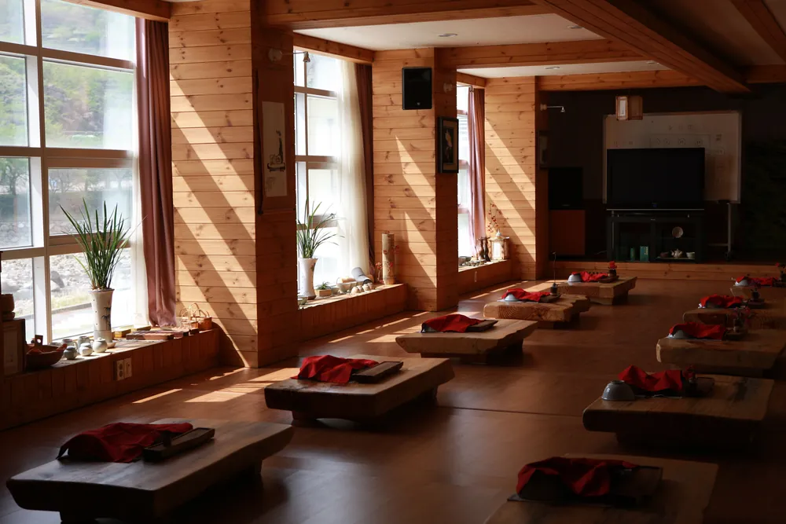
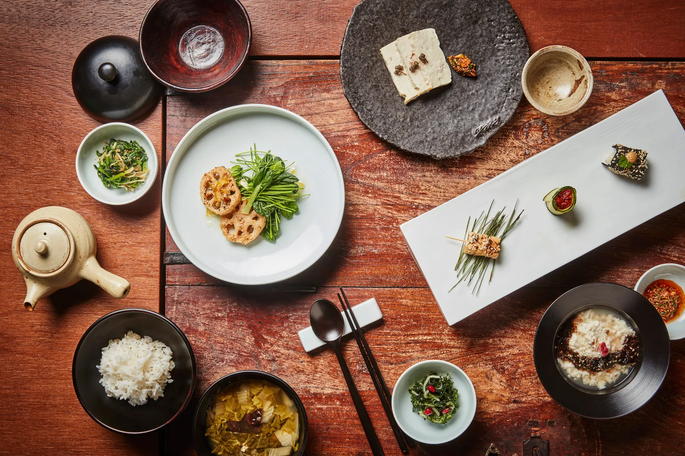
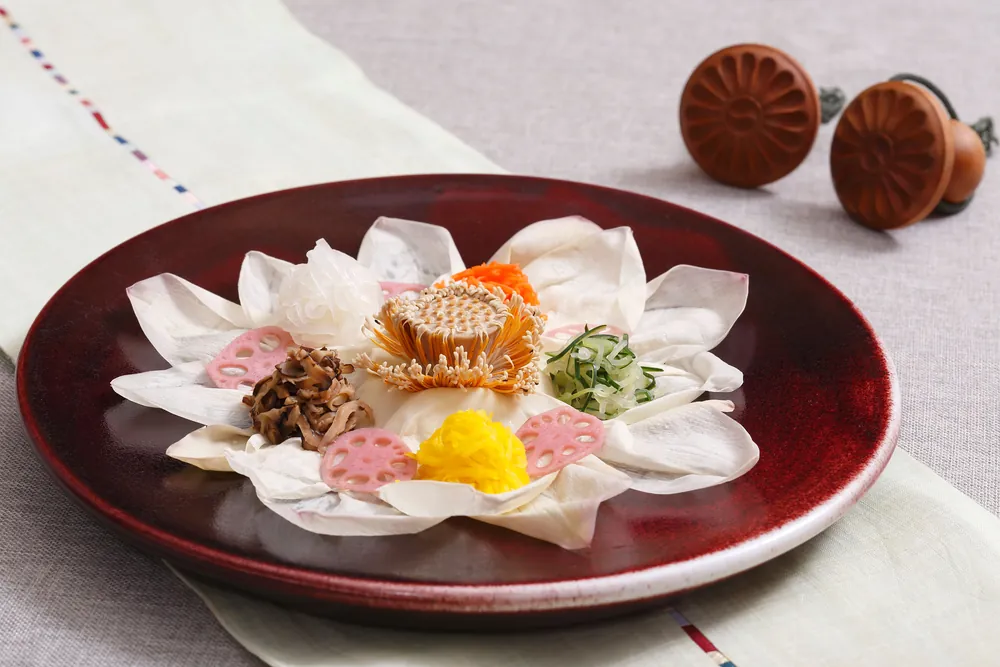
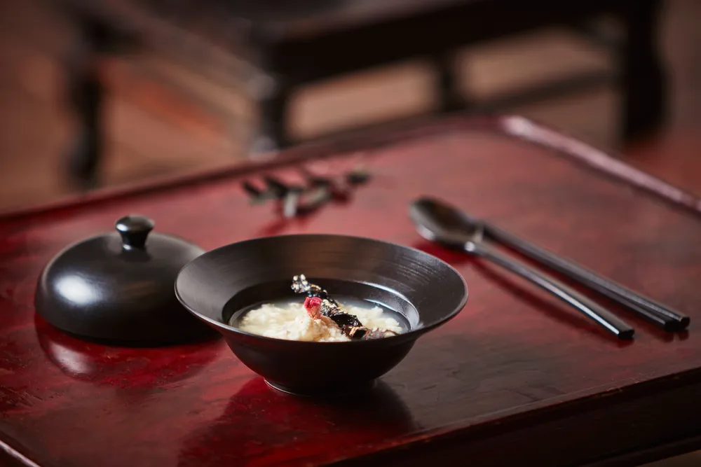
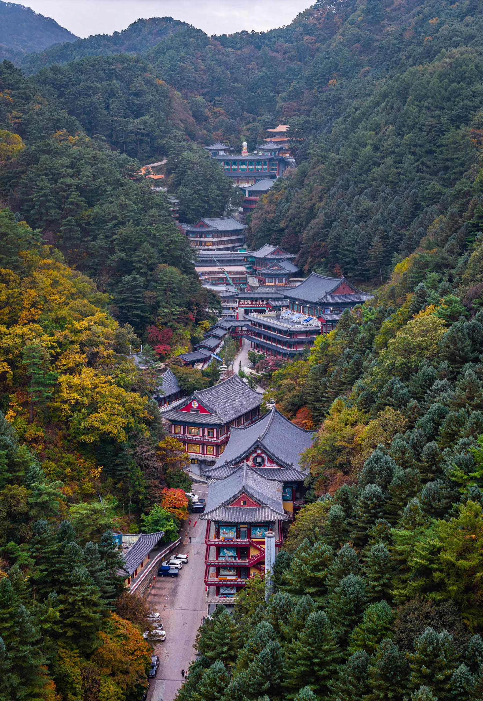

A proposal for Kim'C Market · from IEUM Concierge
소리 · 향 · 촉 · 맛 · 쉼
Dear Ryan
Your Culinary Odyssey opened doors that rarely open: Master Kisoondo's jars in Damyang, the monastics, the ceramicists, a table set by fifty five years of practice.
We would like to propose the next chapter. In New York, the most sought after luxury is no longer only a reservation. It is a ritual: the bathhouse, the sound session, the scent that brings you back to a place. Korea holds older and deeper versions of every one of them, and almost no one is bringing travellers to them as a single, considered journey.
The Sensory Odyssey keeps the table you have built at its heart, and wraps it in Korea's other senses: the sound of the geomungo, the scents of pine and mugwort, the weight of clay in the hand, and the stillness of a mountain temple. Your access to Korea's food masters, joined with ours to its makers of sound, scent and rest.
And it can begin at home. With your new Manhattan store opening in December, the same senses can welcome New Yorkers through its doors long before anyone boards a plane.
Doha Yoon, IEUM Concierge
Each sense is a chapter, led by a Korean master of that craft. Taste stays yours. The rest we bring.
소리
Sound
The geomungo sound bath
향
Scent
Tea and Korean perfume
촉
Touch
Moon jar and onggi
맛
Taste
Sachal eumsik
쉼
Stillness
Temple, tea and heat
Why now
Global wellness tourism forecast for 2025, the fastest growing part of the wellness economy.
Global Wellness InstituteMore spent per trip by international wellness travellers than by the typical international tourist.
Global Wellness Institute, 2022 dataAffluent travellers in the US, UK, France, China and the Gulf want unusual, niche wellness experiences; 84% expect wellness tailored to their goals.
ILTM, Altiant and Hyatt, 2025Foreign guests at Korean temple stays in 2025, a record, up 5.1% on 2024.
Korea HeraldI · Sound
소리
The geomungo is a six string zither struck with a bamboo stick, its voice so low it is felt as much as heard. Korean court music was composed at the tempo of a resting breath, and in a darkened hall it becomes something close to meditation.
Guests lie on warm mats while master Kim Jun-young of Wacheongjae plays a few steps away. Nothing is recorded, nothing is amplified. It is a sound bath built entirely on Korean instruments, and it is already part of our journeys.
We took part in Wacheongjae's sound ritual at RAUM Social Wellness in Seoul this September. Private sessions for IEUM guests are confirmed.



II · Scent
향
Scent in Korea begins with tea. In Hwagae, Hadong, where Korea's first tea trees were planted twelve centuries ago, guests take darye, the Korean way of tea, with a tea master: the steam of roasted green tea, the earth of the old gardens, the quiet of the room.
Then to Seoul, and the new generation of Korean perfume houses that bottle those memories. Heritage led houses such as CHWI build each scent around a Korean place, a rainy bamboo forest or a hidden temple, with caps shaped like Joseon palanquins. In a private session, each guest composes a scent of their own from Korea's native notes, and carries the journey home.



III · Touch
촉
The moon jar, dalhangari, is made from two bowls joined at the waist, and is prized for the slight imperfection where they meet. Guests shape their own with a porcelain master, the workshop our partners at 열두달에피소드 (ep.12) have hosted in Seoul, learning a form that has held its quiet place in Korean homes for three hundred years.
Then to the onggi makers, whose breathing earthenware is the reason Korean fermentation works at all. Porous clay lets the jang breathe as it ages. It is the thread that leads straight back to your fermentation masters, and turns two workshops into one story.


From the clay of the jar, to the jang inside it, to the table it feeds.Where IEUM's chapters meet Kim'C Market's
IV · Taste
맛
We would centre the taste of this journey on Korean temple food: plant based, cooked without garlic or onion, built on jang aged for years in the temple's own jars. It is the most natural bridge between your fermentation masters and the wellness traveller, and it speaks directly to the vegan and plant forward diners of New York.
Cooking with the monastics, a meal at a mountain temple, and a night at a Michelin starred temple table in Seoul, with the jang masters you already know at the heart of it. Your relationships lead; we shape the days around them.



V · Stillness
쉼
A night at a mountain temple: the drum before dawn, 108 bows, the silent monastic breakfast from four wooden bowls, tea with a monk. And the hanjeungmak, Korea's pine fired stone kiln, where monks once healed the sick with heat.
The ritual that New York's bathhouses are only beginning to imitate, in the places where it began.

How we would work together
Who you would be working with
Before founding IEUM, Doha Yoon led the launch of Balmain Beauty, a luxury fragrance house, across five regions: positioning, partnerships, retail and launch events for one of the most demanding categories in luxury.
IEUM brings that same discipline to Korea: the brand story, the opening moment and the experience, built on years of relationships with the makers, masters and hosts behind each chapter of this journey.
Three ways to begin
For the new Manhattan store: an opening evening with a geomungo sound session, darye tea and a temple food tasting from your pantry. A reason for New York to walk in, and to come back.
December 2026
Add one IEUM chapter, the geomungo sound bath or the moon jar studio, to your next Culinary Odyssey. The simplest way to see how your guests respond.
Your next departure
A co-created, co-branded journey of seven to eight days, with sachal eumsik at its heart, your masters at the table and IEUM running the ground.
Spring or autumn 2027
Shall we
Thirty minutes is enough to begin. We would love to hear how your guests responded to the last Odyssey, and where you would like the next one to go.
Doha YoonIEUM Concierge · Seoul & New York · ie-um.com
Proposed partners and chapters are a starting point, to be shaped and confirmed together. Sound ritual photographs: Wacheongjae at RAUM Social Wellness, Seoul, September 2026. Moon jar: hojusaram, Wikimedia Commons, CC BY-SA 2.0. Tea, temple food and temple photographs: ⓒ한국관광공사 (전형준, 김지호, 프레임스튜디오, 알렉스분도, 김윤중, 이효직), Korea Open Government License Type 1. Other photographs: ⓒ한국관광공사 and Unsplash. CHWI is named for illustration; no partnership is implied.